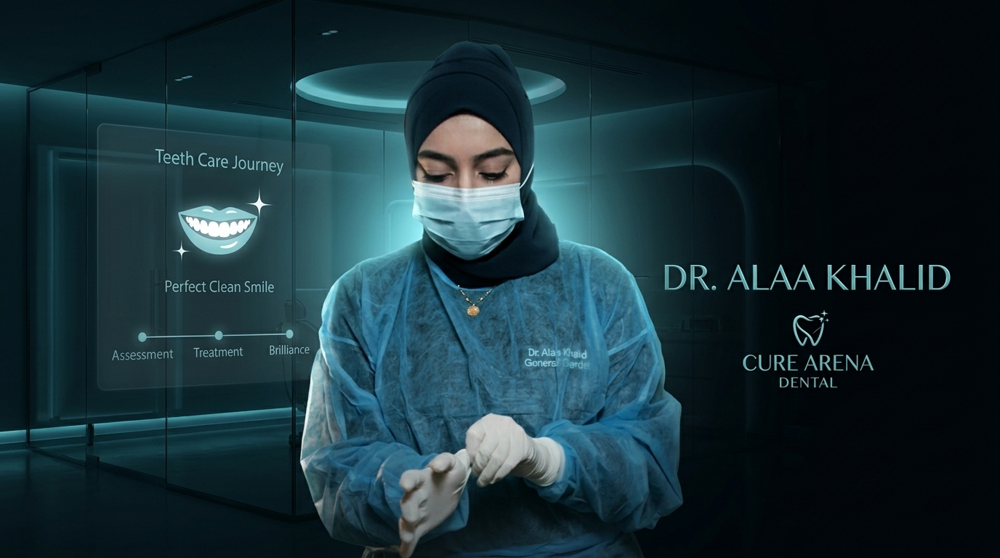

A creative dental treatment commercial focused on presenting the teeth-cleaning journey in a clean, engaging, and modern way.
Project Goal
The goal was to present a dental treatment journey in a creative and engaging way for the Gulf market. The focus was on making the treatment feel clean, professional, and visually interesting while keeping the content easy to follow.
الهدف من الإعلان كان إني أظهر رحلة تنظيف الأسنان بشكل كريتيف ومناسب للسوق الخليجي. ركزت إن شكل العلاج يبان نضيف واحترافي، وفي نفس الوقت الفيديو يكون خفيف وممتع وسهل يتشاف.
Strategy
I worked with the raw footage provided by the client and built the final edit around the treatment journey. I selected a trending track that fit the clinic's atmosphere, edited the footage around its tempo, added subtle sound design and smooth transitions, and handled the color grading to create a clean medical look.
اشتغلت على الـ Raw Footage اللي العميل بعته، وبنيت المونتاج حوالين رحلة العلاج. اخترت ميوزيك تريندي تكون لايقة على جو العيادة، وبنيت المونتاج على الـ Tempo بتاعها، مع Sound Design خفيف وترانزيشن هادية، وكمان عملت الـ Color Grading علشان أطلع شكل نضيف يليق بالعيادة.
Problem Solving
The main challenge was finding a trending track that felt modern enough to keep the video engaging, while still matching the professional atmosphere of a dental clinic. The edit also had to follow the music's tempo without making the treatment feel rushed or overly commercial.
أكبر تحدي كان إني ألاقي ميوزيك تريندي تكون مودرن وتخلي الفيديو ممتع، وفي نفس الوقت تليق بجو عيادة الأسنان وتفضل بروفيشنال. وكمان كان لازم أمشي المونتاج على الـ Tempo من غير ما أخلي رحلة العلاج تحس إنها سريعة أو أوفر.
Workflow
Present the dental treatment journey in a clean and engaging format.
Built the sequence around the treatment process and the rhythm of the music.
Selected a trending track that matched the audience and the clinic's professional atmosphere.
Added subtle sound design to support the visuals without overpowering them.
Used smooth transitions to keep the treatment journey natural and easy to follow.
Adjusted the raw footage to create a clean and consistent medical look.
Tools
Final Result